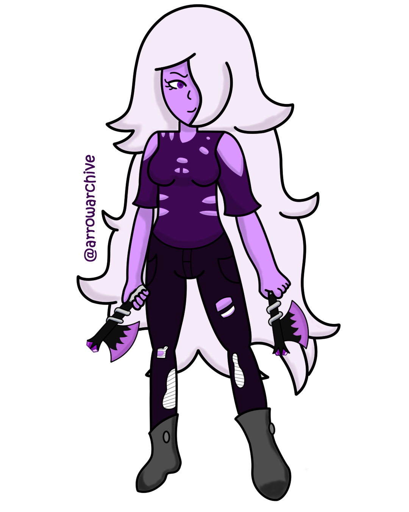

Old Shadow
These were previously undated drawings I posted on Instagram in 2020. I have found when I posted them, so I am archiving them here. As a result, these are my present thoughts on the drawings.
Shadow looks so similar, but so different. I guess that's what happens when you look at your old work.
Drawing on my laptop was how I spent my study halls. It has a reversible screen so it can be used like a tablet and I had a working pen. I finalized Shadow's outfit at the end of 2019 so I knew how she would look when I drew her again, and that I did.
Ideas from her current design can be traced back to this. Her worn-out cold-sholder top with grey boots and ripped jeans came from here, but this is her main palette. I have two different palettes I designed for her clothes that didn't make the cut. I have a screenshot of her from February 2020, so it's a lost treasure I'll add later.
I designed Shadow's hatchets in December 2019, and I designed Aqua's swords around the same time. I didn't know how to shade, so I tried to eyeball it. I drew the axes at a larger scale and shrank them down to fit in her hands. The perspective for them, along with her jeans, were the most difficult parts of the piece.
I'll describe her design changes from then to now in one word: serendipity. With that many rips and tears, adjusting them to fit different poses gets tiresome. Just compare this to my later drawings, it's clear when her evolution starts.